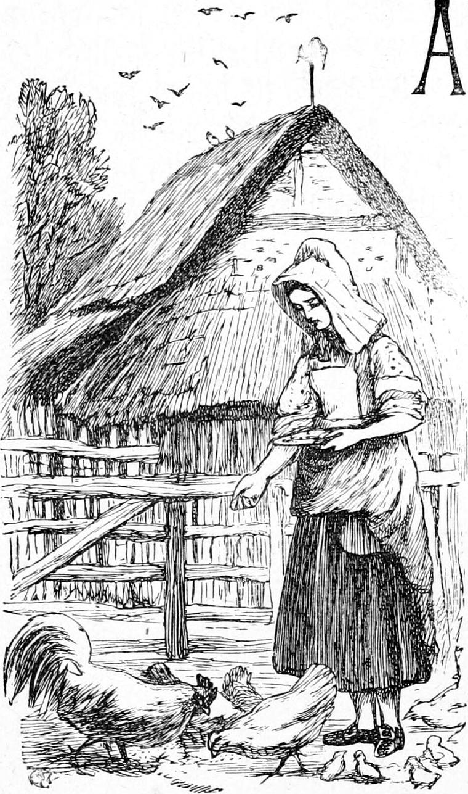
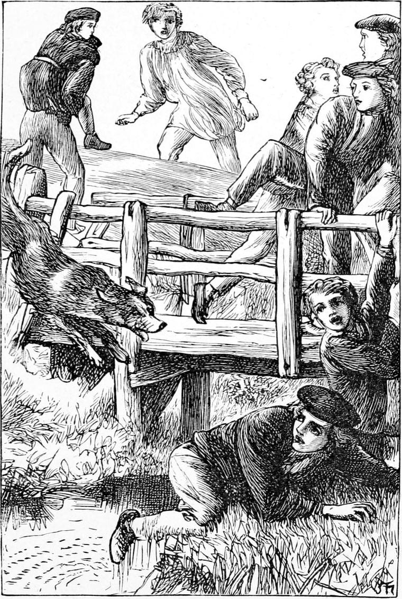

After the expulsion of the Kelpie, and the accession of Kirsty, things went on so peaceably, that the whole time rests in my memory like a summer evening after sundown. I have therefore little more to say concerning our home-life.
There were two schools in the little town—the first, the parish school, the master of which was appointed by the presbytery; the second, one chiefly upheld by the dissenters of the place, the master of which was appointed by the parents of the scholars. This difference, however, indicated very little of the distinction and separation which it would have involved in England. The masters of both were licentiates of the established church, an order having a vague resemblance to that of deacons in the English church; there were at both of them scholars whose fees were paid by the parish, while others at both were preparing for the University; there were many pupils at the second school whose parents took them to the established church on Sundays, and both were yearly examined by the presbytery—that is, the clergymen of a certain district; while my father was on friendly terms with all the parents, some of whom did not come to his church because they thought the expenses of religion should be met by the offerings of those who prized its ministrations, while others regarded the unity of the nation, and thought that religion, like any other of its necessities, ought to be the care of its chosen government. I do not think the second school would ever have come into existence at all except for the requirements of the population, one school being insufficient. There was little real schism in the matter, except between the boys themselves. They made far more of it than their parents, and an occasional outbreak was the consequence.
At this time there was at the second school a certain very rough lad, the least developed beyond the brute, perhaps, of all the scholars of the village. It is more amazing to see how close to the brute a man may remain than it is to see how far he may leave the brute behind. How it began I cannot recall; but this youth, a lad of seventeen, whether moved by dislike or the mere fascination of injury, was in the habit of teasing me beyond the verge of endurance as often as he had the chance. I did not like to complain to my father, though that would have been better than to hate him as I did. I was ashamed of my own impotence for self-defence; but therein I was little to blame, for I was not more than half his size, and certainly had not half his strength. My pride forbidding flight, the probability was, when we met in an out-of-the-way quarter, that he would block my path for half an hour at least, pull my hair, pinch my cheeks, and do everything to annoy me, short of leaving marks of violence upon me. If we met in a street, or other people were in sight, he would pass me with a wink and a grin, as much as to say—Wait.
One of the short but fierce wars between the rival schools broke out. What originated the individual quarrel I cannot tell. I doubt if anyone knew. It had not endured a day, however, before it came to a pitched battle after school hours. The second school was considerably the smaller, but it had the advantage of being perched on the top of the low, steep hill at the bottom of which lay ours. Our battles always began with missiles; and I wonder, as often as I recall the fact, that so few serious accidents were the consequence. From the disadvantages of the ground, we had little chance against the stone-showers which descended upon us like hail, except we charged right up the hill, in the face of the inferior but well-posted enemy. When this was not in favour at the moment, I employed myself in collecting stones and supplying them to my companions, for it seemed to me that every boy, down to the smallest in either school, was skilful in throwing them, except myself: I could not throw halfway up the hill. On this occasion, however, I began to fancy it an unworthy exercise of my fighting powers, and made my first attempt at organizing a troop for an up-hill charge. I was now a tall boy, and of some influence amongst those about my own age. Whether the enemy saw our intent and proceeded to forestall it, I cannot say, but certainly that charge never took place.
A house of some importance was then building, just on the top of the hill, and a sort of hand-wagon, or lorry on low wheels, was in use for moving the large stones employed, the chips from the dressing of which were then for us most formidable missiles. Our adversaries laid hold of this chariot, and turned it into an engine of war. They dragged it to the top of the hill, jumped upon it, as many as it would hold, and, drawn by their own weight, came thundering down upon our troops. Vain was the storm of stones which assailed their advance: they could not have stopped if they would. My company had to open and make way for the advancing prodigy, conspicuous upon which towered my personal enemy Scroggie.
“Now,” I called to my men, “as soon as the thing stops, rush in and seize them: they’re not half our number. It will be an endless disgrace to let them go.”
Whether we should have had the courage to carry out the design had not fortune favoured us, I cannot tell. But as soon as the chariot reached a part of the hill where the slope was less, it turned a little to one side, and Scroggie fell off, drawing half of the load after him. My men rushed in with shouts of defiant onset, but were arrested by the non-resistance of the foe. I sprung to seize Scroggie. He tried to get up, but fell back with a groan. The moment I saw his face, my mood changed. My hatred, without will or wish or effort of mine, turned all at once into pity or something better. In a moment I was down on my knees beside him. His face was white, and drops stood upon his forehead. He lay half upon his side, and with one hand he scooped handfuls of dirt from the road and threw them down again. His leg was broken. I got him to lean his head against me, and tried to make him lie more comfortably; but the moment I sought to move the leg he shrieked out. I sent one of our swiftest runners for the doctor, and in the meantime did the best I could for him. He took it as a matter of course, and did not even thank me. When the doctor came, we got a mattress from a neighbouring house, laid it on the wagon, lifted Scroggie on the top, and dragged him up the hill and home to his mother.
I have said a little, but only a little, concerning our master, Mr. Wilson. At the last examination I had, in compliance with the request of one of the clergymen, read aloud a metrical composition of my own, sent in by way of essay on the given subject, Patriotism, and after this he had shown me a great increase of favour. Perhaps he recognized in me some germ of a literary faculty—I cannot tell: it has never come to much if he did, and he must be greatly disappointed in me, seeing I labour not in living words, but in dead stones. I am certain, though, that whether I build good or bad houses, I should have built worse had I not had the insight he gave me into literature and the nature of literary utterance. I read Virgil and Horace with him, and scanned every doubtful line we came across. I sometimes think now, that what certain successful men want to make them real artists, is simply a knowledge of the literature—which is the essence of the possible art—of the country.
My brother Tom had left the school, and gone to the county town, to receive some final preparation for the University; consequently, so far as the school was concerned, I was no longer in the position of a younger brother. Also Mr. Wilson had discovered that I had some faculty for imparting what knowledge I possessed, and had begun to make use of me in teaching the others. A good deal was done in this way in the Scotch schools. Not that there was the least attempt at system in it: the master, at any moment, would choose the one he thought fit, and set him to teach a class, while he attended to individuals, or taught another class himself. Nothing can be better for the verification of knowledge, or for the discovery of ignorance, than the attempt to teach. In my case it led to other and unforeseen results as well.
The increasing trust the master reposed in me, and the increasing favour which openly accompanied it, so stimulated the growth of my natural vanity, that at length it appeared in the form of presumption, and, I have little doubt, although I was unaware of it at the time, influenced my whole behaviour to my school-fellows. Hence arose the complaint that I was a favourite with the master, and the accusation that I used underhand means to recommend myself to him, of which I am not yet aware that I was ever guilty. My presumption I confess, and wonder that the master did not take earlier measures to check it. When teaching a class, I would not unfrequently, if Mr. Wilson had vacated his chair, climb into it, and sit there as if I were the master of the school. I even went so far as to deposit some of my books in the master’s desk, instead of in my own recess. But I had not the least suspicion of the indignation I was thus rousing against me.
One afternoon I had a class of history. They read very badly, with what seemed wilful blundering; but when it came to the questioning on the subject of the lesson, I soon saw there had been a conspiracy. The answers they gave were invariably wrong, generally absurd, sometimes utterly grotesque. I ought to except those of a few girls, who did their best, and apparently knew nothing of the design of the others. One or two girls, however, infected with the spirit of the game, soon outdid the whole class in the wildness of their replies. This at last got the better of me; I lost my temper, threw down my book, and retired to my seat, leaving the class where it stood. The master called me and asked the reason. I told him the truth of the matter. He got very angry, and called out several of the bigger boys and punished them severely. Whether these supposed that I had mentioned them in particular, as I had not, I do not know; but I could read in their faces that they vowed vengeance in their hearts. When the school broke up, I lingered to the last, in the hope they would all go home as usual; but when I came out with the master, and saw the silent waiting groups, it was evident there was more thunder in the moral atmosphere than would admit of easy discharge. The master had come to the same conclusion, for instead of turning towards his own house, he walked with me part of the way home, without alluding however to the reason. Allister was with us, and I led Davie by the hand: it was his first week of school life. When we had got about half the distance, believing me now quite safe, he turned into a footpath and went through the fields back towards the town; while we, delivered from all immediate apprehension, jogged homewards.
When we had gone some distance farther, I happened to look about—why, I could not tell. A crowd was following us at full speed. As soon as they saw that we had discovered them, they broke the silence with a shout, which was followed by the patter of their many footsteps.
“Run, Allister!” I cried; and kneeling, I caught up Davie on my back, and ran with the feet of fear. Burdened thus, Allister was soon far ahead of me.
“Bring Turkey!” I cried after him. “Run to the farm as hard as you can pelt, and bring Turkey to meet us.”
“Yes, yes, Ranald,” shouted Allister, and ran yet faster.
They were not getting up with us quite so fast as they wished; they began therefore to pick up stones as they ran, and we soon heard them hailing on the road behind us. A little farther, and the stones began to go bounding past us, so that I dared no longer carry Davie on my back. I had to stop, which lost us time, and to shift him into my arms, which made running much harder. Davie kept calling, “Run, Ranald!—here they come!” and jumping so, half in fear, half in pleasure, that I found it very hard work indeed.
Their taunting voices reached me at length, loaded with all sorts of taunting and opprobrious words—some of them, I dare say, deserved, but not all. Next a stone struck me, but not in a dangerous place, though it crippled my running still more. The bridge was now in sight, however, and there I could get rid of Davie and turn at bay, for it was a small wooden bridge, with rails and a narrow gate at the end to keep horsemen from riding over it. The foremost of our pursuers were within a few yards of my heels, when, with a last effort, I bounded on it; and I had just time to set Davie down and turn and bar their way by shutting the gate, before they reached it. I had no breath left but just enough to cry, “Run, Davie!” Davie, however, had no notion of the state of affairs, and did not run, but stood behind me staring. So I was not much better off yet. If he had only run, and I had seen him far enough on the way home, I would have taken to the water, which was here pretty deep, before I would have run any further risk of their getting hold of me. If I could have reached the mill on the opposite bank, a shout would have brought the miller to my aid. But so long as I could prevent them from opening the gate, I thought I could hold the position. There was only a latch to secure it, but I pulled a thin knife from my pocket, and just as I received a blow in the face from the first arrival which knocked me backwards, I had jammed it over the latch through the iron staple in which it worked. Before the first attempt to open it had been followed by the discovery of the obstacle, I was up, and the next moment, with a well-directed kick, disabled a few of the fingers which were fumbling to remove it. To protect the latch was now my main object, but my efforts would have been quite useless, for twenty of them would have been over the top in an instant. Help, however, although unrecognized as such, was making its way through the ranks of the enemy.
They parted asunder, and Scroggie, still lame, strode heavily up to the gate. Recalling nothing but his old enmity, I turned once more and implored Davie. “Do run, Davie, dear! it’s all up,” I said; but my entreaties were lost upon Davie. Turning again in despair, I saw the lame leg being hoisted over the gate. A shudder ran through me: I could not kick that leg; but I sprang up and hit Scroggie hard in the face. I might as well have hit a block of granite. He swore at me, caught hold of my hand, and turning to the assailants said:
“Now, you be off! This is my little business. I’ll do for him!”
Although they were far enough from obeying his orders, they were not willing to turn him into an enemy, and so hung back expectant. Meantime the lame leg was on one side of the gate, the splints of which were sharpened at the points, and the sound leg was upon the other. I, on the one side—for he had let go my hand in order to support himself—retreated a little, and stood upon the defensive, trembling, I must confess; while my enemies on the other side could not reach me so long as Scroggie was upon the top of the gate.
The lame leg went searching gently about, but could find no rest for the sole of its foot, for there was no projecting cross bar upon this side; the repose upon the top was anything but perfect, and the leg suspended behind was useless. The long and the short, both in legs and results, was, that there Scroggie stuck; and so long as he stuck, I was safe. As soon as I saw this, I turned and caught up Davie, thinking to make for home once more. But that very instant there was a rush at the gate; Scroggie was hoisted over, the knife was taken out, and on poured the assailants, before I had quite reached the other end of the bridge.
“At them, Oscar!” cried a voice.
The dog rushed past me on to the bridge, followed by Turkey. I set Davie down, and, holding his hand, breathed again. There was a scurry and a rush, a splash or two in the water, and then back came Oscar with his innocent tongue hanging out like a blood-red banner of victory. He was followed by Scroggie, who was exploding with laughter.

Oscar came up wagging his tail, and looking as pleased as if he had restored obedience to a flock of unruly sheep. I shrank back from Scroggie, wishing Turkey, who was still at the other end of the bridge, would make haste.
“Wasn’t it fun, Ranald?” said Scroggie. “You don’t think I was so lame that I couldn’t get over that gate? I stuck on purpose.”
Turkey joined us with an inquiring look, for he knew how Scroggie had been in the habit of treating me.
“It’s all right, Turkey,” I said. “Scroggie stuck on the gate on purpose.”
“A good thing for you, Ranald!” said Turkey. “Didn’t you see Peter Mason amongst them?”
“No. He left the school last year.”
“He was there, though, and I don’t suppose he meant to be agreeable.”
“I tell you what,” said Scroggie: “if you like, I’ll leave my school and come to yours. My mother lets me do as I like.”
I thanked him, but said I did not think there would be more of it. It would blow over.
Allister told my father as much as he knew of the affair; and when he questioned me, I told him as much as I knew.
The next morning, just as we were all settling to work, my father entered the school. The hush that followed was intense. The place might have been absolutely empty for any sound I could hear for some seconds. The ringleaders of my enemies held down their heads, as anticipating an outbreak of vengeance. But after a few moments’ conversation with Mr. Wilson, my father departed. There was a mystery about the proceeding, an unknown possibility of result, which had a very sedative effect the whole of the morning. When we broke up for dinner, Mr. Wilson detained me, and told me that my father thought it better that, for some time at least, I should not occupy such a prominent position as before. He was very sorry, he said, for I had been a great help to him; and if I did not object, he would ask my father to allow me to assist him in the evening-school during the winter. I was delighted at the prospect, sank back into my natural position, and met with no more annoyance. After a while I was able to assure my former foes that I had had no voice in bringing punishment upon them in particular, and the enmity was, I believe, quite extinguished.
When winter came, and the evening-school was opened, Mr. Wilson called at the manse, and my father very willingly assented to the proposed arrangement. The scholars were mostly young men from neighbouring farms, or from workshops in the village, with whom, although I was so much younger than they, there was no danger of jealousy. The additional assistance they would thus receive, and their respect for superior knowledge, in which, with my advantages, I had no credit over them, would prevent any false shame because of my inferiority in years.
There were a few girls at the school as well—among the rest, Elsie Duff. Although her grandmother was very feeble, Elsie was now able to have a little more of her own way, and there was no real reason why the old woman should not be left for an hour or two in the evening. I need hardly say that Turkey was a regular attendant. He always, and I often, saw Elsie home.
My chief pleasure lay in helping her with her lessons. I did my best to assist all who wanted my aid, but offered unsolicited attention to her. She was not quick, but would never be satisfied until she understood, and that is more than any superiority of gifts. Hence, if her progress was slow, it was unintermitting. Turkey was far before me in trigonometry, but I was able to help him in grammar and geography, and when he commenced Latin, which he did the same winter, I assisted him a good deal.
Sometimes Mr. Wilson would ask me to go home with him after school, and take supper. This made me late, but my father did not mind it, for he liked me to be with Mr. Wilson. I learned a good deal from him at such times. He had an excellent little library, and would take down his favourite books and read me passages. It is wonderful how things which, in reading for ourselves, we might pass over in a half-blind manner, gain their true power and influence through the voice of one who sees and feels what is in them. If a man in whom you have confidence merely lays his finger on a paragraph and says to you, “Read that,” you will probably discover three times as much in it as you would if you had only chanced upon it in the course of your reading. In such case the mind gathers itself up, and is all eyes and ears.
But Mr. Wilson would sometimes read me a few verses of his own; and this was a delight such as I have rarely experienced. My reader may wonder that a full-grown man and a good scholar should condescend to treat a boy like me as so much of an equal; but sympathy is precious even from a child, and Mr. Wilson had no companions of his own standing. I believe he read more to Turkey than to me, however.
As I have once apologized already for the introduction of a few of his verses with Scotch words in them, I will venture to try whether the same apology will not cover a second offence of the same sort.
JEANIE BRAW[1]
In yer goon an’ yer ribbons gay;
But I like ye better on Mondays, Jeanie,
And I like ye better the day.[2]
[Footnote 1: Brave; well dressed.].
[Footnote 2: To-day.]
O’ yer braws[1] ye are thinkin’ a wee;
No’ a’ o’ the Bible-seed, Jeanie,
Nor the minister nor me.
[Footnote 1: Bravery; finery.]
Ye gang wi’ a toss o’ yer chin:
Us twa there’s a shadow atween, Jeanie,
Though yer hand my airm lies in.
Busy wi’ what’s to be dune,
Liltin’ a haveless[2] sang, Jeanie,
I could kiss yer verra shune.
[Footnote 2: Careless.]
In yer bonny blue petticoat,
Wi’ yer kindly airms a’ bare, Jeanie,
On yer verra shadow I doat.
Airy o’ hert and o’ fit[4];
There’s a licht shines oot o’ yer ee, Jeanie;
O’ yersel’ ye thinkna a bit.
[Footnote 3: Diligent.]
[Footnote 4: Foot.]
Liftin’ an’ layin’ doon,
Settin’ richt what’s aye gaein’ wrang, Jeanie,
Yer motion’s baith dance an’ tune.
Skimmin’ the yallow cream,
Poorin’ awa’ the het broo, Jeanie,
Lichtin’ the lampie’s leme[5]—
[Footnote 5: Flame.]
A servant like him that’s abune:
Oh! a woman’s bonniest o’ a’, Jeanie,
Whan she’s doin’ what maun be dune.
Fair kythe[1] ye amang the fair;
But dressed in yer ilka-day’s[2], Jeanie,
Yer beauty’s beyond compare.
[Footnote 1: Appear.]
[Footnote 2: Everyday clothes.]